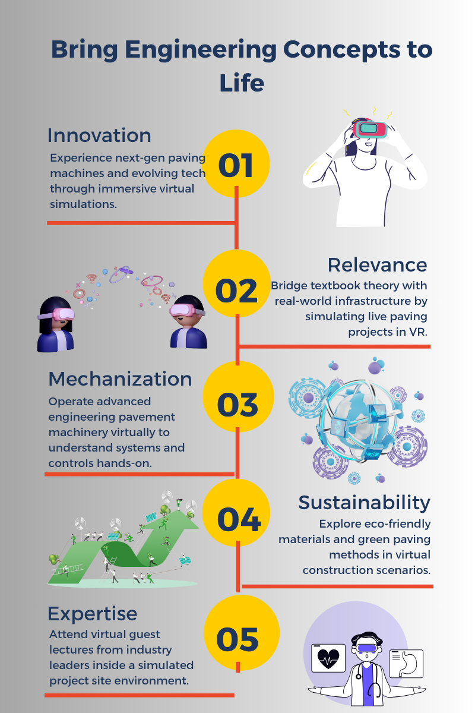
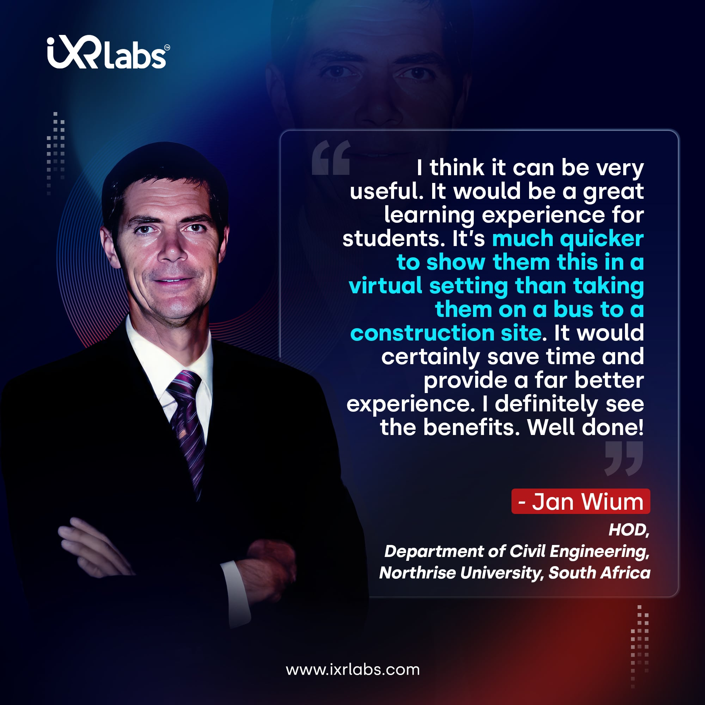

.png)
Asphalt paving technology is integral to civil and construction engineering, playing a vital role in infrastructure development worldwide. However, the intricacies of engineering pavement machinery in VR - from simulating asphalt paver operations to replicating real-world site conditions - can challenge educators aiming to impart practical knowledge effectively.
Let’s delve into five innovative ways to teach the nuances of asphalt paver machinery to budding engineers using immersive virtual reality tools.
Leverage Interactive Virtual Reality Models
Interactive Virtual Reality models provide an unparalleled platform for visual and tactile learning. When addressing complex machinery like asphalt pavers, interactive models can disentangle intricate components, making understanding more intuitive.
These models can simulate the operation of an asphalt machine, allowing users to explore its functions and mechanics in a virtual environment, enhancing their comprehension and practical knowledge.
iXR Labs Asphalt Machine Dynamics module, for example, offers students:
- Interactive 3D insights into the parts and operations of asphalt paver machines that allow them to see how does an asphalt paver works.
- Simulated experiences that allow students to control machinery in a risk-free virtual environment.
- Engaging challenges where students troubleshoot common issues, enhancing problem-solving skills.
Through such interactive platforms, students can get a hands-on feel of the machinery without the constraints of a physical setup.
Introduce Gamified Learning Experiences in Your Civil Labs
Gamified experiences turn passive learning into an active endeavor.
They stimulate students to think critically and foster team collaboration. For instance, a simulation game where students are responsible for managing an asphalt paving project from start to finish can be instrumental.
They would plan, allocate resources, operate machinery, and overcome challenges – all in a virtual space. Such a game's tangible rewards and feedback system can boost engagement and retention.
Incorporate Advanced Technologies
The inclusion of VR in higher education, especially in technical fields, can significantly enhance comprehension. By immersing students in a virtual construction environment, they can experience asphalt paving firsthand.
☑️ Experiential Learning through VR
Imagine being able to transport students to a bustling construction site, allowing them to navigate the intricacies of asphalt laying, all within the safety and comfort of the classroom. With VR, such experiential learning is not only possible but is also highly engaging.
Students can interact with the virtual environment, understanding the tactile nuances of machinery and the steps involved in paving.
☑️ Real-time Simulation
One of the primary advantages of using VR for higher education is the ability to simulate real-world conditions. Students can adjust variables, such as weather conditions or machinery settings, to observe how different factors impact the paving process.
This dynamic approach to learning helps in cultivating problem-solving skills and fosters a deeper understanding of the subject.
☑️ Safety and Familiarization
Before students venture onto actual construction sites, VR training can help familiarize them with safety protocols, machine operations, and the overall environment. This ensures that when they do step on-site, they're well-prepared, minimizing potential hazards.
☑️ Collaborative Learning
VR modules from iXR Labs enable students to work collaboratively in a virtual space. They can undertake team projects, share insights, and learn collectively, even if they're physically distant. This fosters a culture of collaborative problem-solving and shared experiences.
☑️ Constant Evolution with Edtech
Beyond just VR, the integration of edtech in enhancing higher education paves the way for the introduction of other cutting-edge technologies.
Augmented Reality (AR), metaverse in higher education, and other immersive tools can be blended into the curriculum, providing students with a multifaceted, technologically enriched learning experience.
iXR Labs, with its dedication to pushing the boundaries of educational technology, is revolutionizing the way subjects like asphalt paving are taught.
By bridging the gap between theoretical knowledge and practical application, our VR solutions offer students a comprehensive, in-depth, and immersive insight into the world of asphalt technology and its applications.
Integrate Real-World Applications

One of the most effective ways to kindle interest and enthusiasm among engineering students is to showcase the real-world applications of the concepts they are learning. While theoretical knowledge forms the foundation, it is the practical implementation that truly excites curious minds.
☑️ Link Theory to Modern Projects
Begin by discussing ongoing and recent infrastructure developments in the region or globally that prominently feature asphalt paving. Highlight the complexities, challenges, and innovative solutions employed in these projects, showcasing the relevance of classroom learning.
For instance, delving into a recently constructed high-traffic freeway and its design considerations can offer a real-life case study for students.
☑️ Innovations in Machinery
As technology evolves, so does machinery. Discuss the latest advancements in paving equipment, from autonomous machinery to those powered by sustainable energy sources.
Highlight how these innovations lead to more efficient, accurate, and environmentally friendly paving processes.
☑️ Sustainability in Paving
With growing concerns about the environment, the emphasis on sustainable materials and methods in paving has never been higher. Discuss emerging research on eco-friendly asphalt materials, such as those incorporating recycled plastics or those designed to combat urban heat islands.
Demonstrating how the industry is adapting to global challenges underscores the dynamic nature of the field.
☑️ Guest Lectures
Invite seasoned engineers or experts from the field to share their experiences, challenges, and learnings. These real-world stories, combined with technical expertise, can offer students a comprehensive view of the industry.
It provides them with the opportunity to ask questions, seek clarifications, and perhaps even find mentors.
☑️ Site Visits
Organizing field trips to active project sites can be immensely enlightening. Witnessing firsthand the machinery in action, observing the challenges of an actual site, and understanding the intricacies of project management can be a transformative experience for many students. It gives them a tangible sense of the industry they're preparing to enter.
"Ready to Roll? Explore Top Asphalt Paving Tips for Engineering Students. Start Building Your Road to Success Now!"

Highlight Career Opportunities
Emphasizing the professional opportunities awaiting students post-graduation can significantly enhance their engagement and dedication to their studies. The career prospects are diverse and plentiful in the realm of engineering pavement machinery, asphalt paver technology, and related infrastructure sectors.
☑️ Asphalt Technology Specialist
With a deep understanding of the various types of asphalts and their applications, these professionals are essential in developing better and more durable road surfaces. They also work closely with researchers to innovate and find eco-friendly solutions for the industry.
☑️ Machinery Management Expert
Focused on the operation, maintenance, and optimization of heavy machinery used in paving, these individuals ensure that projects run smoothly and efficiently. Their expertise can lead to reduced operational costs and increased longevity of the machinery.
☑️ Urban Infrastructure Planner
As cities grow and evolve, so does the need for robust infrastructure planning. These professionals work on designing and overseeing the development of roads, ensuring they are sustainable, durable, and fit within the urban landscape's broader context.
☑️ Paving Project Manager
In a role that combines technical knowledge with managerial skills, these professionals oversee asphalt paving projects from conception to completion, ensuring timelines, budgets, and quality standards are met.
☑️ Asphalt Quality Control Analyst
Quality is paramount in the world of paving, and these analysts ensure that the asphalt mixtures used meet the necessary standards. They test samples, analyze results, and suggest adjustments to ensure the highest quality output.
☑️ Training and Development Specialist
With the advent of new technologies and methods, there's a constant need for training in the industry. These specialists create training modules, conduct workshops, and ensure that the workforce is updated with the latest in asphalt paver technology.
By diving deep into these roles and discussing the daily responsibilities, challenges, and rewards associated with each, educators can paint a vivid picture of the future for their students.
Conclusion
Teaching the complexities of asphalt paver machinery and its processes to engineering students demands an innovative approach. The blend of interactive models, gamified experiences, and immersive VR training in higher education is redefining how students learn about engineering pavement machinery. When delivered through virtual simulations, even intricate systems like asphalt paving technology become accessible, engaging, and memorable.
iXR Labs remains committed to ensuring educators have the tools to make complex engineering concepts — including engineering pavement machinery in VR — both comprehensible and captivating.
With tailored modules, students can virtually engage with machines, manipulate parameters, and observe real-time outcomes in safe, simulated environments.
These simulations transform theoretical concepts into tangible experiences, bridging the gap between classroom learning and real-world construction practices — and preparing the next generation of civil engineers for industry demands.